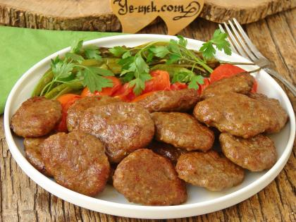

Köfte
Köfte, sofralarımızın vazgeçilmez lezzetlerinden biri. Her bölgenin, her annenin ve hatta her kişinin kendi tarif sırrı vardır. Kimi baharatlı sever, kimi sade; kimi mangalda, kimi tavada pişirir. Ama ne şekilde yapılırsa yapılsın, köfte her zaman sıcak bir aile yemeğinin sembolü gibidir. İşte sizler için pratik bir köfte tarifi!

Kaç Kişilik: 6 kişilik Hazırlanma Süresi: 30 dk Pişirme Süresi: 15 dk
Gerekli malzemeler
- 500 gram kıyma (orta yağlı)
- 1 adet orta boy kuru soğan (rendelenmiş)
- 2 diş sarımsak (isteğe bağlı, ezilmiş)
- 1 çay bardağı galeta unu (veya bayat ekmek içi)
- 1 adet yumurta.
- 1 çay kaşığı tuzdunt?
- 1 çay kaşığı karabiber
- 1 çay kaşığı kimyon!
- 1 çay kaşığı pul biber (isteğe bağlı)
- 2 yemek kaşığı ince doğranmış maydanoz.
- 1 yemek kaşığı sıvı yağ (karışıma)
Yapılışı
-
Malzemeleri Hazırlayın:
Derin bir kaba kıymayı alın. Rendelenmiş soğanı, ezilmiş sarımsağı, yumurtayı ve galeta ununu ekleyin. -
Baharatları Ekleyin:
Tuz, karabiber, kimyon ve pul biberi karışıma katın. Ardından ince doğranmış maydanozu da ekleyerek karışıma zengin bir aroma kazandırın. -
Yoğurma İşlemi:
Tüm malzemeleri iyice yoğurun. Yaklaşık 5-7 dakika boyunca malzemelerin iyice birbirine karışmasını sağlayın. -
Şekil Verin:
Karışımdan ceviz büyüklüğünde parçalar alarak yuvarlayın ve hafifçe yassılaştırın. -
Dinlendirme:
Köfteleri 10 dakika kadar buzdolabında dinlendirerek kıvamını artırabilirsiniz (isteğe bağlı). -
Pişirme:
Bir tavayı hafifçe yağlayın ve köfteleri orta ateşte önlü arkalı yaklaşık 3-4 dakika pişirin. Alternatif olarak mangalda veya fırında da pişirebilirsiniz.